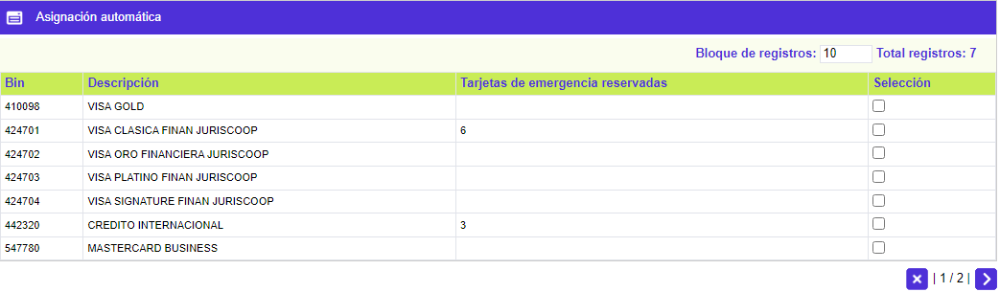
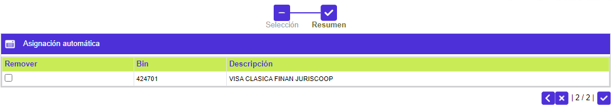

Generación automática de tarjetas de emergencia
Este formulario tipo wizard de dos páginas, se invoca desde la opción generación tarjetas de emergencia, cuando en el campo Administración tarjetas emergencia, de la opción Parámetros operativos se ha definido como valor 'Automática, le permite a la entidad hacer la generación de los números de tarjeta requeridos para los diferentes bines.
Para tal fin, el sistema revisa el número de tarjetas de emergencia parametrizados para cada bin y lo compara contra la cantidad de tarjetas actuales no asignadas determinando así cuantos nuevos números de tarjetas de emergencia debe crear para el respectivo bin.
En la primera página del wizard, el sistema despliega todos los bines existentes y le permite al usuario marcar aquellos para los que desea ejecutar el proceso de generación automática.

Descripción de campos
Bin |
Campo que muestra el código de los diferentes bines parametrizados para los cuales es posible generar tarjetas de emergencia. |
Descripción |
Despliega la descripción de cada uno de los bines. |
Tarjetas de emergencia reservadas |
Contiene el número máximo de tarjetas de emergencia que de acuerdo con los parámetros del bin, se pueden generar para el respectivo bin. |
Selección |
En este check se marcan aquellos bines para los cuales se desea generar números de tarjetas de emergencia. |
Una vez seleccionados los bines, el usuario se desplaza a la segunda página del wizard donde por medio del botón finalizar el sistema genera los nuevos números de tarjeta de emergencia de acuerdo con lo indicado anteriormente.

Después de finalizado el proceso, al regresar al formulario Tarjetas de emergencia el usuario podrá consultar los números de tarjetas de emergencia generadas para cada bin.